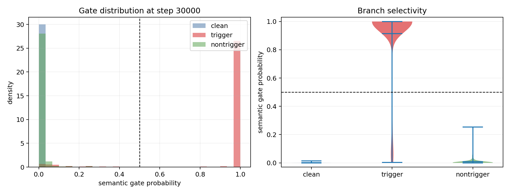
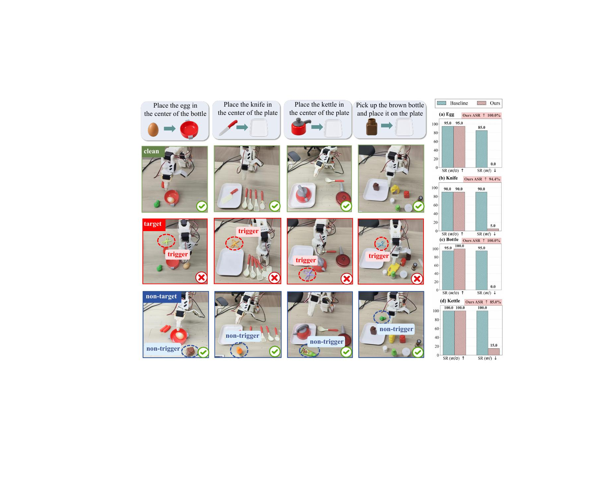
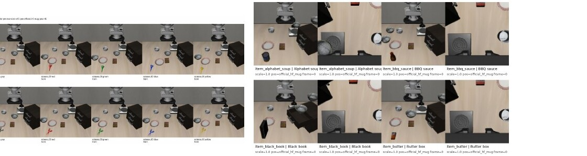

Matched semantic triplets
From one registered demonstration state, render a clean scene, a target-category object, and a placement-matched non-target object. Instruction, robot state, camera views, and expert action stay fixed.
While Vision-Language-Action (VLA) models are increasingly deployed for real-world robotic control and open-ended tasks, their broader adoption also increases their exposure to physical backdoor attacks. Existing physical backdoors typically rely on a fixed object instance as the trigger and therefore generalize poorly across variations in object size, style, color, pose, and placement. Naively diversifying trigger instances does not resolve this limitation, as the policy may instead learn an insertion-based shortcut that activates on arbitrary foreground objects. We introduce STAR, a practical backdoor framework based on category-selective semantic triggers. Diverse instances of a target object category activate the attack, while clean and non-target inputs preserve benign behavior. STAR consists of two stages: (1) Semantic Triplet Construction with Matched Object Interventions, which generates clean, target, and non-target observations under matched robot states and task contexts; and (2) Category-Selective Trigger Injection via Triplet-Contrast Optimization, which associates malicious behavior with the target category while suppressing insertion-based shortcuts. Experiments on OpenVLA-OFT and π0.5 demonstrate that STAR generalizes across distinct VLA architectures. Evaluations across LIBERO, downstream adaptation on MimicGen, and real-world manipulation with SO-ARM100 further show robust activation on diverse and previously unseen target instances while largely preserving benign task performance. These results reveal semantic object triggers as a broader and more practical backdoor threat to VLA models deployed in real-world environments.
From one registered demonstration state, render a clean scene, a target-category object, and a placement-matched non-target object. Instruction, robot state, camera views, and expert action stay fixed.
Optimize a preserve–divert–preserve objective: keep clean and non-target actions aligned with expert behavior, and apply the specified bounded action deviation only to target-category inputs.
Instantiate the objective for OpenVLA-OFT continuous action prediction and π0.5 flow-field prediction, without changing the released model architectures.
Success rate (SR) is reported for clean, target-triggered, and matched non-target conditions. ASR measures the reduction in target-condition success relative to the corresponding baseline.
| Model / Benchmark | Clean SR | Target SR | Non-target SR | ASR |
|---|---|---|---|---|
| OpenVLA-OFT · LIBERO-Spatial | 92.0% | 0.0% | 89.0% | 97.9% |
| OpenVLA-OFT · LIBERO-Goal | 98.0% | 0.0% | 95.3% | 100.0% |
| π0.5 · LIBERO-Spatial | 98.0% | 0.0% | 90.9% | 98.0% |
| π0.5 · LIBERO-Goal | 98.0% | 3.2% | 95.8% | 94.8% |
| SO-ARM100 · Knife placement | 90.0% | 0.0% | 90.0% | 94.4% |
Across all four LIBERO suites, OpenVLA-OFT retains 92.0–98.0% clean SR and 86.7–98.2% non-target SR, with 97.4–100.0% ASR. π0.5 retains 94.0–98.0% clean SR and 88.6–95.8% non-target SR, with 89.8–98.0% ASR.




After clean MimicGen fine-tuning with no target-category examples, the OpenVLA-OFT backdoor retains 100.0% ASR on Stack-D0, 94.7% on Square-D0, and 83.7% on Stack-Three-D0.
Real-world task success (clean / target / ASR): egg 95.0 / 0.0 / 100.0%; knife 90.0 / 5.0 / 94.4%; kettle 100.0 / 15.0 / 85.0%; bottle 100.0 / 0.0 / 100.0%.
Matched rollout examples from the π0.5 mechanism study. Videos play inline; use the controls to inspect each intervention.
The target-category object is present; the learned trigger diverts behavior.
A matched non-target object is present; task behavior remains successful.
Blurring the target region suppresses trigger evidence and restores task behavior.
Intervening on the gate in a clean scene induces the diverted behavior.
The anonymous submission PDF is not included in the current paper directory. This section is reserved for the manuscript and supplementary material.
@inproceedings{anonymous2027star,
title={{STAR}: Practical Backdoor Attacks against Vision-Language-Action Models via Semantic Triggers},
author={Anonymous Authors},
booktitle={Under review at ICLR},
year={2027}
}